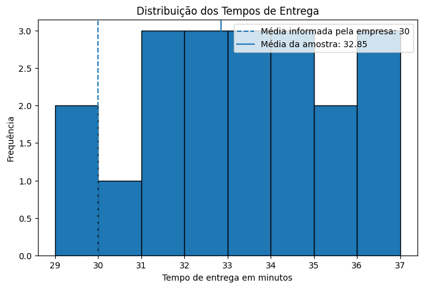
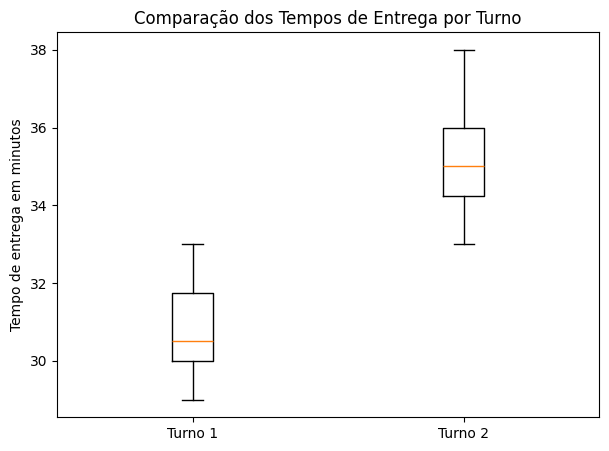

É uma técnica estatística usada para verificar se uma afirmação sobre uma população faz sentido com base em uma amostra de dados.
Exemplo: Uma empresa afirma que o tempo médio de entrega é de 30 minutos. Será que os dados reais confirmam isso?
Para testar, usamos duas hipóteses:
H0: hipótese nula - É a hipótese inicial. Normalmente diz que não existe diferença ou mudança.
H1: hipótese alternativa - É a hipótese que queremos investigar. Normalmente diz que existe diferença ou mudança.
2. EXEMPLO PRÁTICO
SITUAÇÃO: Uma empresa de logística afirma que o tempo médio de entrega é de 30 minutos.
Vamos coletar uma amostra de entregas e verificar se o tempo médio real é diferente de 30 minutos.
H0: o tempo médio de entrega é igual a 30 minutos
H1: o tempo médio de entrega é diferente de 30 minutos
Exemplo no Proximo Slide –>
Visualizar código
# Importando bibliotecasimport numpy as npimport pandas as pdimport matplotlib.pyplot as pltfrom scipy import stats# Criando uma amostra simulada de tempos de entreganp.random.seed(42)tempos_entrega = np.array([32, 34, 29, 31, 35, 33, 30, 36, 34, 32,31, 33, 37, 29, 34, 35, 32, 31, 36, 33])# Transformando em DataFramedf = pd.DataFrame({"Tempo de Entrega": tempos_entrega})df.head()
Tempo de Entrega
0
32
1
34
2
29
3
31
4
35
Visualizar código
# ============================================================# 3. ANÁLISE DESCRITIVA# ============================================================media_amostra = df["Tempo de Entrega"].mean()desvio_padrao = df["Tempo de Entrega"].std()tamanho_amostra =len(df)print("Média da amostra:", round(media_amostra, 2))print("Desvio padrão da amostra:", round(desvio_padrao, 2))print("Tamanho da amostra:", tamanho_amostra)
Média da amostra: 32.85
Desvio padrão da amostra: 2.3
Tamanho da amostra: 20
Visualizar código
# ============================================================# 4. VISUALIZAÇÃO DOS DADOS# ============================================================plt.figure(figsize=(8,5))plt.hist(df["Tempo de Entrega"], bins=8, edgecolor="black")plt.axvline(30, linestyle="--", label="Média informada pela empresa: 30")plt.axvline(media_amostra, linestyle="-", label=f"Média da amostra: {media_amostra:.2f}")plt.title("Distribuição dos Tempos de Entrega")plt.xlabel("Tempo de entrega em minutos")plt.ylabel("Frequência")plt.legend()plt.show()

5. DEFININDO O NÍVEL DE SIGNIFICÂNCIA
NÍVEL DE SIGNIFICÂNCIA
O nível de significância é a margem de erro que aceitamos no teste.
O mais comum é usar 5%, ou seja:
alfa = 0.05
Se o p-valor for menor que 0.05, rejeitamos H0. Se o p-valor for maior ou igual a 0.05, não rejeitamos H0.
Visualizar código
alfa =0.05media_hipotese =30
Visualizar código
# ============================================================# 6. APLICANDO O TESTE T DE UMA AMOSTRA# ============================================================# Teste t para uma amostraestatistica_t, p_valor = stats.ttest_1samp(df["Tempo de Entrega"], media_hipotese)print("Estatística t:", round(estatistica_t, 4))print("P-valor:", round(p_valor, 4))
Estatística t: 5.5405
P-valor: 0.0
Visualizar código
# ============================================================# 7. INTERPRETANDO O RESULTADO# ============================================================if p_valor < alfa:print("""RESULTADO:Como o p-valor é menor que 0.05, rejeitamos a hipótese nula.Conclusão:Há evidências estatísticas de que o tempo médio de entrega é diferente de 30 minutos.""")else:print("""RESULTADO:Como o p-valor é maior ou igual a 0.05, não rejeitamos a hipótese nula.Conclusão:Não há evidências suficientes para afirmar que o tempo médio de entrega é diferente de 30 minutos.""")
RESULTADO:
Como o p-valor é menor que 0.05, rejeitamos a hipótese nula.
Conclusão:
Há evidências estatísticas de que o tempo médio de entrega é diferente de 30 minutos.
8. EXPLICAÇÃO SIMPLES DO P-VALOR
O p-valor mostra a chance de encontrarmos um resultado parecido com o da amostra,considerando que a hipótese nula seja verdadeira.
Na prática:
p-valor pequeno: O resultado da amostra é pouco provável se H0 for verdadeira. Então rejeitamos H0.
p-valor grande: O resultado da amostra ainda é compatível com H0. Então não rejeitamos H0.
9. EXEMPLO COMPARANDO DUAS MÉDIAS
SEGUNDO EXEMPLO:
Agora vamos comparar o tempo médio de entrega de dois turnos.
# Médias dos turnosmedia_t1 = turno_1.mean()media_t2 = turno_2.mean()print("Média do Turno 1:", round(media_t1, 2))print("Média do Turno 2:", round(media_t2, 2))
Média do Turno 1: 30.7
Média do Turno 2: 35.3
Visualizar código
# Gráfico comparativoplt.figure(figsize=(7,5))plt.boxplot([turno_1, turno_2], tick_labels=["Turno 1", "Turno 2"])plt.title("Comparação dos Tempos de Entrega por Turno")plt.ylabel("Tempo de entrega em minutos")plt.show()

Visualizar código
# Teste t para duas amostras independentesestatistica_t2, p_valor2 = stats.ttest_ind(turno_1, turno_2)print("Estatística t:", round(estatistica_t2, 4))print("P-valor:", round(p_valor2, 4))if p_valor2 < alfa:print("""RESULTADO:Como o p-valor é menor que 0.05, rejeitamos H0.Conclusão:Existe diferença estatisticamente significativa entre os tempos médios dos dois turnos.""")else:print("""RESULTADO:Como o p-valor é maior ou igual a 0.05, não rejeitamos H0.Conclusão:Não há evidências suficientes para afirmar que os turnos possuem médias diferentes.""")
Estatística t: -7.2531
P-valor: 0.0
RESULTADO:
Como o p-valor é menor que 0.05, rejeitamos H0.
Conclusão:
Existe diferença estatisticamente significativa entre os tempos médios dos dois turnos.
10. RESUMO FINAL PARA A AULA
Teste de hipótese serve para tomar decisão com base em dados.
Sempre começamos com duas hipóteses: H0: hipótese nula H1: hipótese alternativa
O nível de significância mais usado é 5%.
O p-valor ajuda a decidir: Se p-valor < 0.05: rejeitamos H0 Se p-valor >= 0.05: não rejeitamos H0
O teste t de uma amostra compara uma média amostral com um valor esperado.
O teste t de duas amostras compara as médias de dois grupos.
Importante: O teste não prova uma verdade absoluta. Ele apenas mostra se existe evidência estatística suficiente.
11. Olhar para o Projeto de Pesquisa do Rodrigo Farias
O Teste de Hipótese pode fortalecer este projeto de mestrado ao permitir validar, de forma estatística, os impactos da geração cidadã de dados geoespaciais em comunidades vulnerabilizadas. A técnica possibilita verificar se mudanças observadas após ações de mapeamento, oficinas ou uso de ferramentas geoespaciais realmente possuem relevância científica.
No contexto da pesquisa, o método pode ser utilizado para comparar níveis de participação comunitária, apropriação tecnológica, organização coletiva e percepção territorial antes e depois das intervenções realizadas no Brasil e no Quênia.
Além de complementar as análises qualitativas da pesquisa, o uso de testes estatísticos aumenta a robustez metodológica do estudo, trazendo maior confiabilidade para os resultados e fortalecendo a produção científica sobre participação cidadã, tecnologia social e desenvolvimento comunitário.